2 GLMM’s in R
When completing an analysis, I may skip around in my script quite a bit. Therefore, I like all packages loaded, and all data uploaded and manipulated at the start of my script.
2.1 Outline
Introduce the data to be used throughout the tutorial.
Fit generalized linear models (GLMs, here Poisson and negative binomial regressions). Models are fit in both frequentist and Bayesian frameworks to lay the groundwork for the more complicated models.
Fit generalized linear models with random effects (GLMMs) to allow for correlations in space and time. Models are fit in both frequentist and Bayesian frameworks.
2.2 Data Exploration
2.2.1 Moth counts
Here is what the data look like. Columns: Location, Treatment, TrapID, Longitude, Latitude, AssessmentNumber, and SamplingDate should be self-explanatory… TransplantDate is the date that the rice seedlings were transplanted into the field; DispInstallDate is the treatment installation date; TrapInstallDate is the trap installation date; “nYSB” are the moth counts (number of YSB moths); DaysOfCatch is the number of days since the trap was previously sampled or the number of days since trap installation if it is assessment number 1; DATI is days after trap installation; DADI is days after dispenser installation; and DAT is days after transplant. Some of these columns will be discussed more later.
## Location Treatment TrapID Longitude
## Length:672 Length:672 Min. :101.0 Min. :106.5
## Class :character Class :character 1st Qu.:102.8 1st Qu.:106.7
## Mode :character Mode :character Median :152.5 Median :107.8
## Mean :152.5 Mean :108.7
## 3rd Qu.:202.2 3rd Qu.:111.0
## Max. :204.0 Max. :111.6
##
## Latitude TransplantDate TrapInstallDate DispInstallDate
## Min. :-7.422 Length:672 Length:672 Length:672
## 1st Qu.:-7.242 Class :character Class :character Class :character
## Median :-6.876 Mode :character Mode :character Mode :character
## Mean :-6.896
## 3rd Qu.:-6.740
## Max. :-6.179
##
## AssessmentNumber SamplingDate nYSB DaysOfCatch
## Min. : 1.00 Length:672 Min. : 0.00 Min. : 7.00
## 1st Qu.: 3.00 Class :character 1st Qu.: 2.00 1st Qu.:10.00
## Median : 5.00 Mode :character Median : 5.00 Median :10.00
## Mean : 4.75 Mean : 22.56 Mean :10.01
## 3rd Qu.: 7.00 3rd Qu.: 17.00 3rd Qu.:10.00
## Max. :10.00 Max. :429.00 Max. :12.00
##
## DATI DADI DAT
## Min. : 8.00 Min. : 10.00 Min. : 11.0
## 1st Qu.: 29.75 1st Qu.: 30.00 1st Qu.: 31.0
## Median : 50.00 Median : 50.00 Median : 52.0
## Mean : 47.60 Mean : 48.04 Mean : 51.9
## 3rd Qu.: 70.00 3rd Qu.: 70.00 3rd Qu.: 73.0
## Max. :101.00 Max. :101.00 Max. :114.0
## NA's :232## $Location
## [1] "Loc9" "Loc10" "Loc7" "Loc2" "Loc1" "Loc4" "Loc5" "Loc3" "Loc6"
## [10] "Loc8"
##
## $Treatment
## [1] "trt A" "CGP"
##
## $TrapID
## NULL
##
## $Longitude
## NULL
##
## $Latitude
## NULL
##
## $TransplantDate
## [1] "2023-08-06" "2023-08-09" "2023-09-09" "2023-09-04" "2023-08-12"
## [6] "2023-08-10" "2023-09-03" "2023-09-02" "2023-07-24" "2023-07-27"
## [11] "2023-08-01" "2023-08-02" "2023-08-22" "2023-08-24" "2023-08-26"
## [16] "2023-08-27"
##
## $TrapInstallDate
## [1] "2023-08-13" "2023-08-15" "2023-09-10" "2023-09-08" "2023-08-17"
## [6] "2023-08-11" "2023-09-05" "2023-08-06" "2023-08-04" "2023-08-26"
## [11] "2023-08-31" "2023-08-27" "2023-08-28"
##
## $DispInstallDate
## [1] "2023-08-13" NA "2023-09-10" "2023-08-16" "2023-08-15"
## [6] "2023-08-11" "2023-09-05" "2023-08-06" "2023-08-04" "2023-08-26"
## [11] "2023-08-31" "2023-08-27"
##
## $AssessmentNumber
## NULL
##
## $SamplingDate
## [1] "2023-08-23" "2023-09-03" "2023-09-12" "2023-09-23" "2023-10-02"
## [6] "2023-10-12" "2023-10-22" "2023-10-31" "2023-08-25" "2023-09-05"
## [11] "2023-09-14" "2023-09-25" "2023-10-04" "2023-10-15" "2023-10-24"
## [16] "2023-11-03" "2023-09-20" "2023-09-30" "2023-10-10" "2023-10-20"
## [21] "2023-10-30" "2023-11-10" "2023-11-19" "2023-09-18" "2023-09-28"
## [26] "2023-10-08" "2023-10-18" "2023-10-28" "2023-11-08" "2023-11-17"
## [31] "2023-08-26" "2023-09-15" "2023-10-06" "2023-10-25" "2023-11-04"
## [36] "2023-11-14" "2023-11-24" "2023-09-04" "2023-09-24" "2023-10-05"
## [41] "2023-10-14" "2023-08-21" "2023-08-31" "2023-09-10" "2023-08-16"
## [46] "2023-09-06" "2023-09-16" "2023-09-26" "2023-10-16" "2023-11-06"
## [51] "2023-11-15" "2023-08-14" "2023-08-24" "2023-10-13" "2023-11-09"
## [56] "2023-10-27" "2023-11-07" "2023-09-07" "2023-09-17" "2023-09-27"
## [61] "2023-10-17" "2023-11-16"
##
## $nYSB
## NULL
##
## $DaysOfCatch
## NULL
##
## $DATI
## NULL
##
## $DADI
## NULL
##
## $DAT
## NULLThe data are the moth counts collected at each trap (average per day), within each location and throughout the season. Note how the y-axis changes for each plot in the figure.
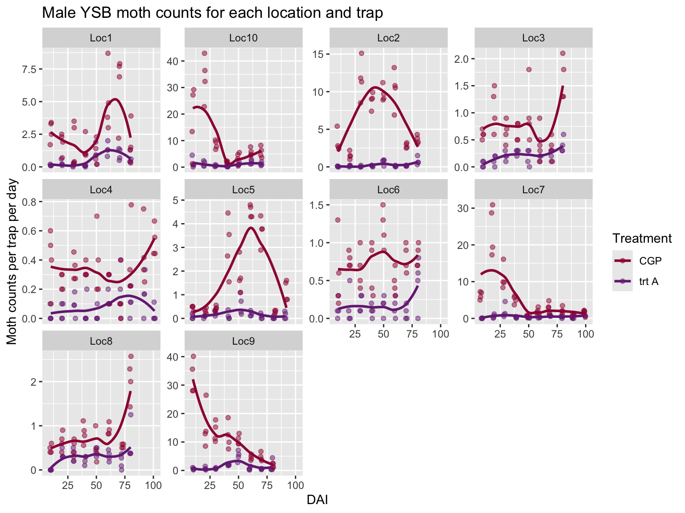
2.3 Basic GLM models
To start, we ignore all the spatial and temporal relationships in the data and assume each data point is independent and identically distributed (iid). This is not a good model for the data! It is just our starting off point.
When building hierarchical Bayesian models, it is always a good idea to start simple, make sure everything works as expected, and then build up.
2.3.1 Mathematical model
Our response variable is a count, therefore we use either a Poisson or negative binomial distribution as the basis for our model. These models are known as generalized linear models (GLMs).
The model must also include an offset to account for the varying time intervals between sample. (If the traps are left unchecked for more days, we naturally expect the trap to have more moths. This varying effort is accounted for by the offset.)
2.3.2 Poisson regression model
We start with a poisson version of our regression model:
\[ y_i \sim Pois(\lambda_i) \\ log(\lambda_i ) = \beta_0 + \beta_1 x_{A,i} + \mbox{ln} \left(DaysOfCatch_i\right) \]
where, for data samples \(i = 1, ..., N\),
\(y_i\) is moth count \(i\),
\(\lambda_i\) is the expected moth count for sample \(i\),
\(\beta_0\) is the intercept of the model. Here, it is the basis for the expected moth count for our control treatment.
\(\beta_1\) is the expected difference in moth counts between the control group and the treatment A group,
\(x_{i}\) is an indicator variable that equals 1 if sample \(i\) is from a treatment A field and equals 0 otherwise, and
\(\left(DaysOfCatch_i\right)\) is the offset to account for the varying time interval between samples. This is necessary because with a longer time interval, more moths will fly into the trap.
2.3.3 Negative binomial regression model
In ecology, there is always additional variability in our data than what the Poisson distribution allows. To account for the additional variability in our model, we switch to a negative binomial distribution:
\[ y_i \sim NegBinom(\lambda_i, \phi) \\ log(\lambda_i ) = \beta_0 + \beta_1 x_{i} + \mbox{ln} \left(DaysOfCatch_i\right) \]
“Negative binomial regression is used to model count data for which the variance is higher than the mean.” (https://www.pymc.io/projects/examples/en/latest/generalized_linear_models/GLM-negative-binomial-regression.html)
For the negative binomial regression, all variables and parameters are defined as before, but the model has an additional parameter, \(\phi\), that allows for the additional variation. The negative binomial distribution and regression model can be written in many ways. In our models, \(\phi\) is defined through the following formula where the variance associated with an expected moth count, \(\lambda\), is:
\[ Var(\lambda) = \lambda + \phi \cdot\lambda^2 \]
(For a Poisson distribution, \(Var(\lambda) = \lambda\).)
2.3.4 Bayesian mathematical model
I also fit these models using a Bayesian framework, again to build our foundation for the more complex models that come later.
For the Bayesian models, I only show the more complex negative binomial version.
To make our models Bayesian, we add priors to our parameters:
\[ y_i \sim NegBinom(\lambda_i, \phi) \\ log(\lambda_i ) = \beta_0 + \beta_1 x_{A,i} + \mbox{ln} \left(DaysOfCatch_i\right) \\ \beta_0 \sim Normal(0, 2) \\ \beta_1 \sim Normal(0, 2) \\ \phi \sim HalfCauchy(0,1) \]
The models use slightly informative priors. When working on a log-scale (e.g., with Poisson or negative binomial distributions), this often becomes essential to avoid parameter estimates on the boundaries. (See Hooten and Hobbs for a good discussion on this issue.)
2.3.5 Trapping reduction defined
The primary metric of interest from these models is a derived parameter that we call trapping reduction (TR):
\[ TR = 100 - 100 e ^{(-\beta_1)} \]
To obtain a 95% confidence interval for TR (for the frequentist version of our model), we use the following approximation:
\[ TR = 100 - 100 e ^{(-\beta_1 \pm 2 \cdot SE(\beta_1))} \]
For the Bayesian version, the derived parameter is sampled as part of the MCMC iterations, and the 95% credible interval is the 2.5%, 97.5% quantiles of its resulting distribution.
2.3.6 Fitting the frequentist models
Note: when I predict for new data, I set DaysOfCatch = 1, and then I compare to the moths per day variable (mothsperday = nYSB / DaysOfCatch). I want to exclude any patterns related to the varying time intervals.
These models show a very tight confidence intervals for our predictions. But also, the residual deviance is MUCH greater than the degree of freedom, indicating a lack of fit. The plot of the predictions overlaid on the data also demonstrate the lack of fit.
##
## Call:
## glm(formula = nYSB ~ TreatmentF, family = poisson, data = datR,
## offset = log(DaysOfCatch))
##
## Coefficients:
## Estimate Std. Error z value Pr(>|z|)
## (Intercept) 1.396045 0.008574 162.83 <2e-16 ***
## TreatmentFtrt A -2.166510 0.026769 -80.93 <2e-16 ***
## ---
## Signif. codes: 0 '***' 0.001 '**' 0.01 '*' 0.05 '.' 0.1 ' ' 1
##
## (Dispersion parameter for poisson family taken to be 1)
##
## Null deviance: 36638 on 671 degrees of freedom
## Residual deviance: 25678 on 670 degrees of freedom
## AIC: 28072
##
## Number of Fisher Scoring iterations: 6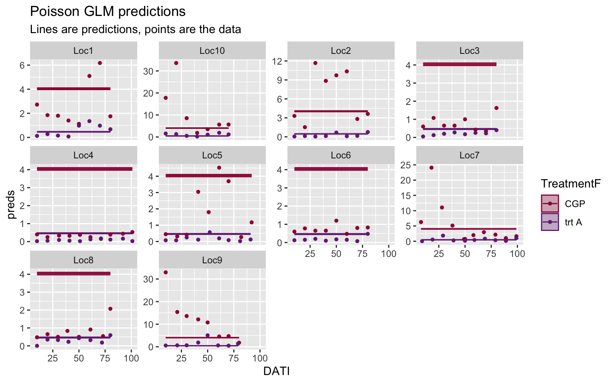
The model is such a bad fit to the data, it is hard to even tell what is going on in the plot above.
For the negative binomial model, our confidence intervals are a little wider, but we are still ignoring all the correlations in our data. And the plot of the predictions again indicates the lack of fit.
##
## Call:
## glm.nb(formula = nYSB ~ TreatmentF + offset(log(DaysOfCatch)),
## data = datR, init.theta = 0.6559820251, link = log)
##
## Coefficients:
## Estimate Std. Error z value Pr(>|z|)
## (Intercept) 1.40225 0.06790 20.65 <2e-16 ***
## TreatmentFtrt A -2.16364 0.09893 -21.87 <2e-16 ***
## ---
## Signif. codes: 0 '***' 0.001 '**' 0.01 '*' 0.05 '.' 0.1 ' ' 1
##
## (Dispersion parameter for Negative Binomial(0.656) family taken to be 1)
##
## Null deviance: 1184.50 on 671 degrees of freedom
## Residual deviance: 766.68 on 670 degrees of freedom
## AIC: 4883.5
##
## Number of Fisher Scoring iterations: 1
##
##
## Theta: 0.6560
## Std. Err.: 0.0352
##
## 2 x log-likelihood: -4877.5410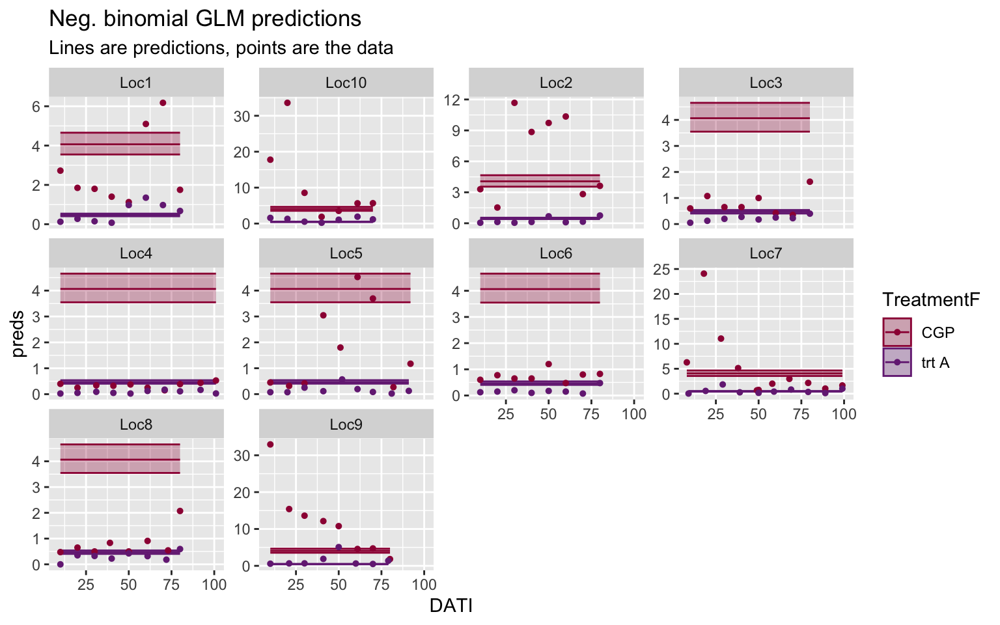
2.3.7 Bayesian (brms) model fit
In R, I fit the Bayesian models using the “brms” package. I find this package very intuitive and it has fast, efficient algorithms based on Stan.
Because the models take a few minutes to fit, I usually fit them when I am initially running through my code, save them, and then only load the model fit when rendering the Rmarkdown file and creating the resulting figures.
The prior_summary command is helpful if you do not know what a parameter is called in ‘brms’. Here, I used the command to find out what they called their \(\phi\) parameter. (They call it the shape parameter.)
## prior class coef group resp dpar nlpar lb ub source
## normal(0,2) b user
## normal(0,2) b TreatmenttrtA (vectorized)
## normal(0,2) Intercept user
## cauchy(0,1) shape 0 userThe Bayesian parameter estimates match very closely to the frequentist estimates. This is expected, but reassuring that we have built the correct foundation for the more complicated models to come. The first summary output is from the Bayesian model; the second is from the frequentist fit.
Comparisons of TR predictions and predicted moth count values can be found at the end of the page.
## Family: negbinomial
## Links: mu = log; shape = identity
## Formula: nYSB3 ~ Treatment + offset(log(DaysOfCatch))
## Data: tmp (Number of observations: 672)
## Draws: 6 chains, each with iter = 2000; warmup = 500; thin = 1;
## total post-warmup draws = 9000
##
## Regression Coefficients:
## Estimate Est.Error l-95% CI u-95% CI Rhat Bulk_ESS Tail_ESS
## Intercept 1.40 0.07 1.27 1.54 1.00 9469 6659
## TreatmenttrtA -2.16 0.10 -2.35 -1.96 1.00 8822 6162
##
## Further Distributional Parameters:
## Estimate Est.Error l-95% CI u-95% CI Rhat Bulk_ESS Tail_ESS
## shape 0.66 0.04 0.59 0.73 1.00 9046 6668
##
## Draws were sampled using sampling(NUTS). For each parameter, Bulk_ESS
## and Tail_ESS are effective sample size measures, and Rhat is the potential
## scale reduction factor on split chains (at convergence, Rhat = 1).##
## Call:
## glm.nb(formula = nYSB ~ TreatmentF + offset(log(DaysOfCatch)),
## data = datR, init.theta = 0.6559820251, link = log)
##
## Coefficients:
## Estimate Std. Error z value Pr(>|z|)
## (Intercept) 1.40225 0.06790 20.65 <2e-16 ***
## TreatmentFtrt A -2.16364 0.09893 -21.87 <2e-16 ***
## ---
## Signif. codes: 0 '***' 0.001 '**' 0.01 '*' 0.05 '.' 0.1 ' ' 1
##
## (Dispersion parameter for Negative Binomial(0.656) family taken to be 1)
##
## Null deviance: 1184.50 on 671 degrees of freedom
## Residual deviance: 766.68 on 670 degrees of freedom
## AIC: 4883.5
##
## Number of Fisher Scoring iterations: 1
##
##
## Theta: 0.6560
## Std. Err.: 0.0352
##
## 2 x log-likelihood: -4877.5410## TR lowerCI upperCI
## 2.5% 88.5 86 90.5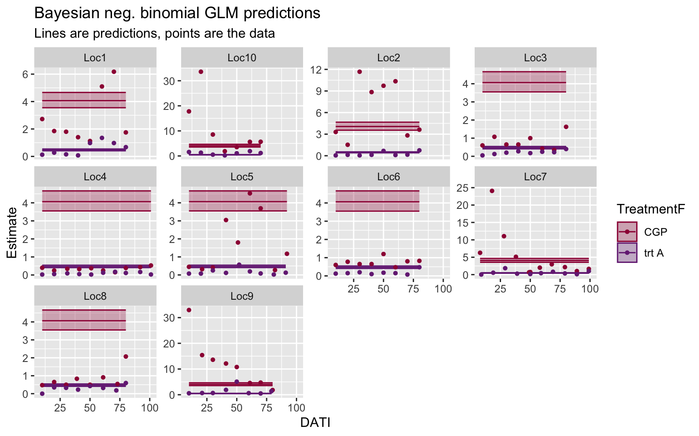
2.4 GLMM: Random effect (RE) for locations
The first fix we make to the model is acknowledging that overall average moth pressure varies from location to location (see Fig 1 of moth counts). To make this fix, we add a location random effect (RE) and our model becomes a generalized linear mixed-effects model (GLMM or GLMER).
We also want to acknowledge that the treatment effect may vary from location to location– sometimes we see a big difference in moth counts between control and treatment fields, and sometimes the difference is smaller. For inference though, we are only interested in the larger picture, which is the overall trapping reduction. (We are not interested in what happens at these exact locations per se, we are more interested in the average treatment effect.) Therefore, we also add a treatment random effect.
2.4.1 GLMM mathematical model
I only show the Poisson version of the model, the NB version is a straightforward extension.
\[ y_{ik} \sim Pois(\lambda_{ik}) \\ log(\lambda_{ik} ) = \beta_0 + \beta_1 x_{A,i} + \gamma_{0k} x_{ik} + \gamma_{1k} x_{i} x_{ik} + \mbox{ln} \left(DaysOfCatch_i\right) \\ \gamma_{0k} \sim Normal(0, \sigma^2_{0}) \\ \gamma_{1k} \sim Normal(0, \sigma^2_{1}) \\ \]
where, in addition to the variables and parameters defined for the GLM, we have
\(k = 1,..., K=10\) represents the locations,
\(y_{ik}\) is moth count \(i\) from location \(k\),
\(\lambda_{ik}\) is the expected moth count for sample \(i\) from location \(k\),
\(\beta_0\) is the expected moth count for our control treatment for a new location,
\(\beta_1\) is the expected difference in moth counts between the control group and the treatment A group for a new location,
\(\gamma_{0k}\) is the random intercept associated with location \(k\), which leads to different background moth pressures at each location. All \(\gamma_{0k}\) come from an iid Normal distribution.
\(\gamma_{1k}\) is the random slope associated with location \(k\), which leads to different treatment effects at each location. All \(\gamma_{1k}\) come from an iid Normal distribution, and
\(x_{ik}\) is an indicator variable that equals 1 if moth count \(i\) is associated with location \(k\) and 0 otherwise.
OK, technically I should be introducing matrices here because \(k = 1,..., K=10\) locations, so we need a new indicator variable for each location, but I’m going to be lazy and write it like this for now.
2.4.2 Bayesian GLMM
Here is the same model with a Bayesian framework and using a negative binomial regression:
To make our models Bayesian, we add priors to our parameters:
\[ y_{ik}\sim NegBinom(\lambda_{ik}, \phi) \\ log(\lambda_{ik} ) = \beta_0 + \beta_1 x_{A,i} + \gamma_{0k} x_{ik} + \gamma_{1k} x_{A,i} x_{ik} + \mbox{ln} \left(DaysOfCatch_i\right) \\ \gamma_{0k} \sim Normal(0, \sigma^2_{0}) \\ \gamma_{1k} \sim Normal(0, \sigma^2_{1}) \\ \beta_0 \sim Normal(0, 2) \\ \beta_1 \sim Normal(0, 2) \\ \sigma^2_{0} \sim HalfCauchy(0,1) \\ \sigma^2_{1} \sim HalfCauchy(0,1) \\ \phi \sim HalfCauchy(0,1) \\ \]
2.4.3 Bayesian GLMM – Matrix version
I DO write the Bayesian version in matrix form because it matches the coding (and is more correct given the need for a \(KxK\) \(Z\) design matrix):
\[ \mathbf{Y} \sim NegBinom(\boldsymbol\lambda, \phi) \\ log(\boldsymbol\lambda) = \mathbf{X}\boldsymbol\beta + \mathbf{Z}\boldsymbol\gamma + \mbox{ln} \left(\bf{DaysOfCatch}\right) \\ \boldsymbol\beta \sim Normal(\mathbf{0}, 2\mathbf{I}) \\ \boldsymbol\gamma \sim Normal(\mathbf{0}, \boldsymbol\sigma^2 \mathbf{I}) \\ \boldsymbol\sigma^2 \sim HalfCauchy(\mathbf{0}, 1\mathbf{I})) \\ \phi \sim HalfCauchy(0,1) \]
2.4.4 GLMM frequentist fit
A couple of notes here. R always gets mad when you ask for SE’s for predictions from a GLMM. Technically, you need to run simulations to get them and then they still come with an asterisk related to their reliability. (This is a reason to use the Bayesian model– credible intervals are never based on approximations!)
When we plot our predictions, we see that we now have better estimates for the overall mean at each location, and we see how much they vary from location to location, but there is a strong temporal pattern at each location that we are missing.
## Generalized linear mixed model fit by maximum likelihood (Laplace
## Approximation) [glmerMod]
## Family: poisson ( log )
## Formula: nYSB ~ TreatmentF + (1 + TreatmentF | Location)
## Data: datR
## Offset: log(DaysOfCatch)
##
## AIC BIC logLik deviance df.resid
## 14070.5 14093.1 -7030.3 14060.5 667
##
## Scaled residuals:
## Min 1Q Median 3Q Max
## -9.969 -1.689 -0.584 0.768 33.638
##
## Random effects:
## Groups Name Variance Std.Dev. Corr
## Location (Intercept) 1.4407 1.2003
## TreatmentFtrt A 0.4075 0.6384 -0.75
## Number of obs: 672, groups: Location, 10
##
## Fixed effects:
## Estimate Std. Error z value Pr(>|z|)
## (Intercept) 0.8159 0.3798 2.148 0.0317 *
## TreatmentFtrt A -1.8900 0.2052 -9.209 <2e-16 ***
## ---
## Signif. codes: 0 '***' 0.001 '**' 0.01 '*' 0.05 '.' 0.1 ' ' 1
##
## Correlation of Fixed Effects:
## (Intr)
## TrtmntFtrtA -0.743| TR | lowerCI | upperCI |
|---|---|---|
| 84.9 | 77.4 | 89.9 |
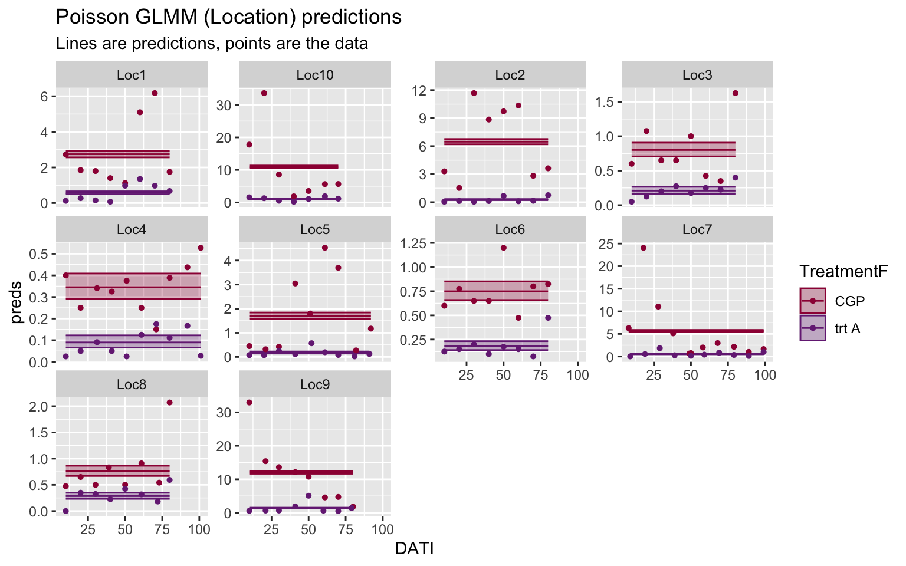
## Generalized linear mixed model fit by maximum likelihood (Laplace
## Approximation) [glmerMod]
## Family: Negative Binomial(1.5338) ( log )
## Formula: nYSB ~ TreatmentF + (1 + TreatmentF | Location)
## Data: datR
## Offset: log(DaysOfCatch)
##
## AIC BIC logLik deviance df.resid
## 4399.3 4426.3 -2193.6 4387.3 666
##
## Scaled residuals:
## Min 1Q Median 3Q Max
## -1.1392 -0.7363 -0.2834 0.3435 7.8739
##
## Random effects:
## Groups Name Variance Std.Dev. Corr
## Location (Intercept) 1.4075 1.1864
## TreatmentFtrt A 0.3602 0.6001 -0.76
## Number of obs: 672, groups: Location, 10
##
## Fixed effects:
## Estimate Std. Error z value Pr(>|z|)
## (Intercept) 0.8258 0.3781 2.184 0.029 *
## TreatmentFtrt A -1.8986 0.2033 -9.340 <2e-16 ***
## ---
## Signif. codes: 0 '***' 0.001 '**' 0.01 '*' 0.05 '.' 0.1 ' ' 1
##
## Correlation of Fixed Effects:
## (Intr)
## TrtmntFtrtA -0.735| TR | lowerCI | upperCI |
|---|---|---|
| 85 | 77.7 | 89.9 |
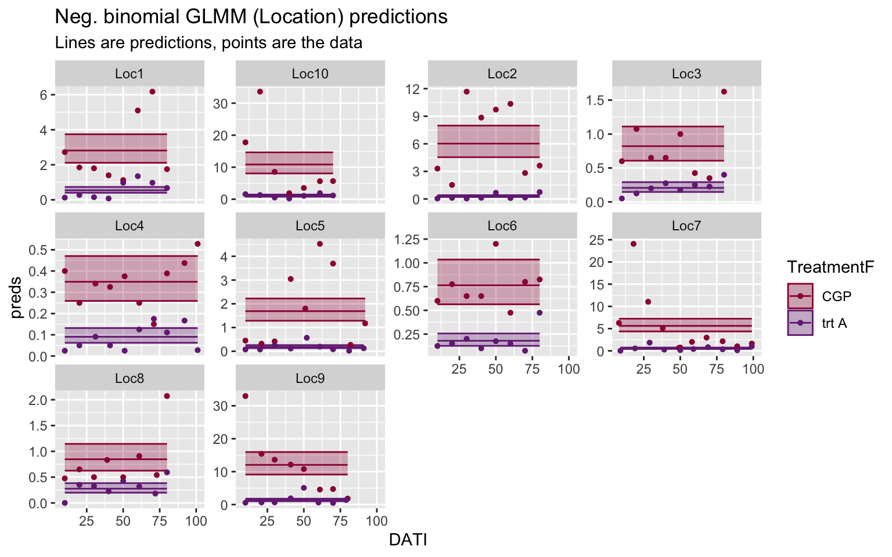
2.4.5 GLMM Bayes (brms) version
By default, the prior distributions of random slopes and intercepts are correlated in “brm”. If the correlation is non-significant, you may want to remove that correlation to simplify your model. To remove the correlation, change the random effects term from “(1 + TreatmentF|Location)” to ” (1 + TreatmentF||Location)” (has an extra vertical line), which makes them independent.
You’ll notice that the parameter estimates are slightly different from the frequentist NB model fit here– the more complicated your model is, the more likely you will find this is true with slightly different versions of your model (here, adding priors and fitting with a different algorithm).
## Family: negbinomial
## Links: mu = log; shape = identity
## Formula: nYSB ~ TreatmentF + offset(logDaysOfCatch) + (1 + TreatmentF | Location)
## Data: datR (Number of observations: 672)
## Draws: 6 chains, each with iter = 2000; warmup = 500; thin = 1;
## total post-warmup draws = 9000
##
## Multilevel Hyperparameters:
## ~Location (Number of levels: 10)
## Estimate Est.Error l-95% CI u-95% CI Rhat
## sd(Intercept) 1.32 0.32 0.84 2.10 1.00
## sd(TreatmentFtrtA) 0.69 0.19 0.40 1.13 1.00
## cor(Intercept,TreatmentFtrtA) -0.61 0.22 -0.90 -0.07 1.00
## Bulk_ESS Tail_ESS
## sd(Intercept) 2355 3331
## sd(TreatmentFtrtA) 2984 4589
## cor(Intercept,TreatmentFtrtA) 4009 5301
##
## Regression Coefficients:
## Estimate Est.Error l-95% CI u-95% CI Rhat Bulk_ESS Tail_ESS
## Intercept 0.82 0.42 -0.03 1.67 1.00 2407 3221
## TreatmentFtrtA -1.88 0.23 -2.34 -1.41 1.00 3513 4646
##
## Further Distributional Parameters:
## Estimate Est.Error l-95% CI u-95% CI Rhat Bulk_ESS Tail_ESS
## shape 1.53 0.10 1.35 1.73 1.00 9290 6869
##
## Draws were sampled using sampling(NUTS). For each parameter, Bulk_ESS
## and Tail_ESS are effective sample size measures, and Rhat is the potential
## scale reduction factor on split chains (at convergence, Rhat = 1).| TR | lowerCI | upperCI | |
|---|---|---|---|
| 2.5% | 84.8 | 75.7 | 90.4 |
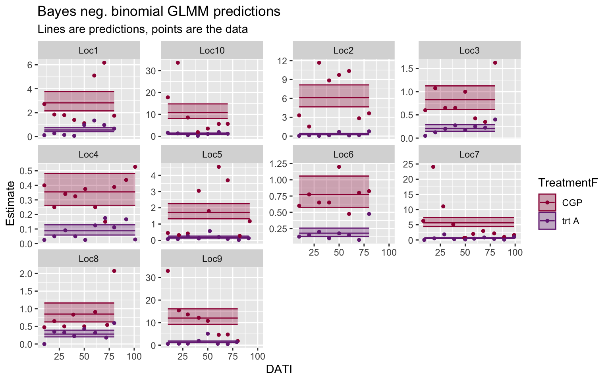
2.5 GLMM: RE for location, nested SamplingDate
In this version of the model, we acknowledge that sampling on different days of the season adds to the variability of the moth counts, and that the sampling date variability is different for each trial location. In this model, however, the correlation between sampling dates is ignored.
This model is included here because it is helpful to think whether you have nested or crossed random effects (if applicable). And it allows us to include samplign date in our model as a random effect and still fit the model quickly in a frequentist framework.
Here, the predictions now mimc the spatial patterns we see over time, but our predictions are overly optimistic because we are ignoring the fact that the samples are actually correlated over time. (A priori, we expect that is moth counts are high on one sampling occasion, they will also be high on the next sampling occasion.)
2.5.4 Nested GLMM Bayes (brms) version
## Family: negbinomial
## Links: mu = log; shape = identity
## Formula: nYSB ~ TreatmentF + offset(log(DaysOfCatch)) + (1 + TreatmentF | Location:SamplingDateC)
## Data: datR (Number of observations: 672)
## Draws: 6 chains, each with iter = 2000; warmup = 500; thin = 1;
## total post-warmup draws = 9000
##
## Multilevel Hyperparameters:
## ~Location:SamplingDateC (Number of levels: 117)
## Estimate Est.Error l-95% CI u-95% CI Rhat
## sd(Intercept) 1.32 0.11 1.13 1.55 1.00
## sd(TreatmentFtrtA) 1.10 0.14 0.85 1.41 1.00
## cor(Intercept,TreatmentFtrtA) -0.56 0.10 -0.73 -0.34 1.00
## Bulk_ESS Tail_ESS
## sd(Intercept) 1203 2153
## sd(TreatmentFtrtA) 1997 3378
## cor(Intercept,TreatmentFtrtA) 2573 3959
##
## Regression Coefficients:
## Estimate Est.Error l-95% CI u-95% CI Rhat Bulk_ESS Tail_ESS
## Intercept 0.67 0.14 0.40 0.95 1.01 674 1450
## TreatmentFtrtA -1.94 0.15 -2.24 -1.64 1.00 1579 3421
##
## Further Distributional Parameters:
## Estimate Est.Error l-95% CI u-95% CI Rhat Bulk_ESS Tail_ESS
## shape 6.15 0.66 4.95 7.54 1.00 9504 6918
##
## Draws were sampled using sampling(NUTS). For each parameter, Bulk_ESS
## and Tail_ESS are effective sample size measures, and Rhat is the potential
## scale reduction factor on split chains (at convergence, Rhat = 1).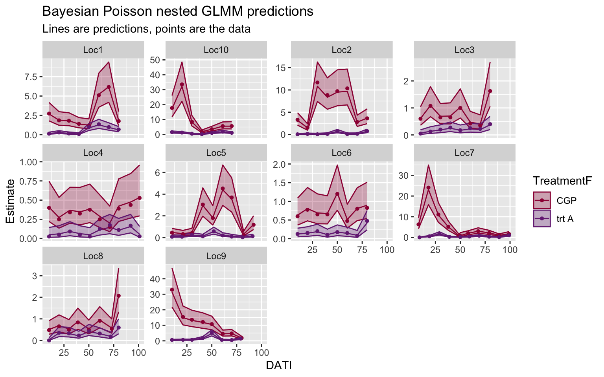
2.6 GLMM with Gaussian Processes: RE for Trial, GP for Date
Now we are in the territory where we have to fit the models in a Bayesian framework. If our response variable was continuous (i.e., the regression model was based on a Normal distribution), then we could still use maximum likelihood estimation.
2.6.1 Gaussian Process Bayes (brms) version
- Use numeric version of sampling date for better algorithm stability. Still, we have a warning about a divergent transition. Ideally, we would tweak the model and look at the data carefully so fix this warning, but because we are working with made up data, we will not worry abotu the warning for now.
## Family: negbinomial
## Links: mu = log; shape = identity
## Formula: nYSB ~ TreatmentF + offset(log(DaysOfCatch)) + (1 + TreatmentF || Location) + gp(numericDate, by = Location)
## Data: datR (Number of observations: 672)
## Draws: 6 chains, each with iter = 5000; warmup = 1000; thin = 1;
## total post-warmup draws = 24000
##
## Gaussian Process Hyperparameters:
## Estimate Est.Error l-95% CI u-95% CI Rhat
## sdgp(gpnumericDateLocationLoc1) 1.09 0.61 0.40 2.71 1.00
## sdgp(gpnumericDateLocationLoc10) 1.07 0.43 0.57 2.23 1.00
## sdgp(gpnumericDateLocationLoc2) 0.88 0.40 0.41 1.91 1.00
## sdgp(gpnumericDateLocationLoc3) 1.20 0.90 0.12 3.47 1.00
## sdgp(gpnumericDateLocationLoc4) 1.44 0.99 0.08 3.82 1.00
## sdgp(gpnumericDateLocationLoc5) 1.26 0.50 0.64 2.56 1.00
## sdgp(gpnumericDateLocationLoc6) 1.10 0.90 0.04 3.36 1.00
## sdgp(gpnumericDateLocationLoc7) 1.23 0.30 0.80 1.94 1.00
## sdgp(gpnumericDateLocationLoc8) 1.46 0.95 0.32 3.83 1.00
## sdgp(gpnumericDateLocationLoc9) 0.95 0.25 0.60 1.55 1.00
## lscale(gpnumericDateLocationLoc1) 0.24 0.08 0.09 0.41 1.00
## lscale(gpnumericDateLocationLoc10) 0.08 0.08 0.00 0.27 1.01
## lscale(gpnumericDateLocationLoc2) 0.09 0.07 0.00 0.21 1.00
## lscale(gpnumericDateLocationLoc3) 4.00 93.01 0.03 13.07 1.00
## lscale(gpnumericDateLocationLoc4) 13.22 477.53 0.33 42.98 1.00
## lscale(gpnumericDateLocationLoc5) 0.10 0.06 0.01 0.21 1.00
## lscale(gpnumericDateLocationLoc6) 8.22 121.81 0.13 37.27 1.00
## lscale(gpnumericDateLocationLoc7) 0.01 0.00 0.00 0.02 1.00
## lscale(gpnumericDateLocationLoc8) 1.26 1.67 0.02 4.94 1.00
## lscale(gpnumericDateLocationLoc9) 0.01 0.01 0.00 0.04 1.00
## Bulk_ESS Tail_ESS
## sdgp(gpnumericDateLocationLoc1) 10185 16013
## sdgp(gpnumericDateLocationLoc10) 4090 3703
## sdgp(gpnumericDateLocationLoc2) 8073 11523
## sdgp(gpnumericDateLocationLoc3) 7718 10470
## sdgp(gpnumericDateLocationLoc4) 11874 10578
## sdgp(gpnumericDateLocationLoc5) 8913 14125
## sdgp(gpnumericDateLocationLoc6) 11972 11799
## sdgp(gpnumericDateLocationLoc7) 8111 12343
## sdgp(gpnumericDateLocationLoc8) 4120 11892
## sdgp(gpnumericDateLocationLoc9) 7658 13204
## lscale(gpnumericDateLocationLoc1) 6935 6108
## lscale(gpnumericDateLocationLoc10) 735 2535
## lscale(gpnumericDateLocationLoc2) 4698 3857
## lscale(gpnumericDateLocationLoc3) 3132 5417
## lscale(gpnumericDateLocationLoc4) 11576 11713
## lscale(gpnumericDateLocationLoc5) 3355 5693
## lscale(gpnumericDateLocationLoc6) 11888 6598
## lscale(gpnumericDateLocationLoc7) 7112 10758
## lscale(gpnumericDateLocationLoc8) 1644 3829
## lscale(gpnumericDateLocationLoc9) 6306 9918
##
## Multilevel Hyperparameters:
## ~Location (Number of levels: 10)
## Estimate Est.Error l-95% CI u-95% CI Rhat Bulk_ESS Tail_ESS
## sd(Intercept) 0.96 0.35 0.39 1.76 1.00 8429 8943
## sd(TreatmentFtrtA) 0.70 0.20 0.42 1.17 1.00 10719 15843
##
## Regression Coefficients:
## Estimate Est.Error l-95% CI u-95% CI Rhat Bulk_ESS Tail_ESS
## Intercept 0.86 0.41 0.03 1.65 1.00 8738 12590
## TreatmentFtrtA -1.77 0.24 -2.24 -1.27 1.00 8971 12100
##
## Further Distributional Parameters:
## Estimate Est.Error l-95% CI u-95% CI Rhat Bulk_ESS Tail_ESS
## shape 4.16 0.44 3.37 5.09 1.00 4027 9821
##
## Draws were sampled using sampling(NUTS). For each parameter, Bulk_ESS
## and Tail_ESS are effective sample size measures, and Rhat is the potential
## scale reduction factor on split chains (at convergence, Rhat = 1).| TR | lowerCI | upperCI | |
|---|---|---|---|
| 2.5% | 82.9 | 71.9 | 89.4 |
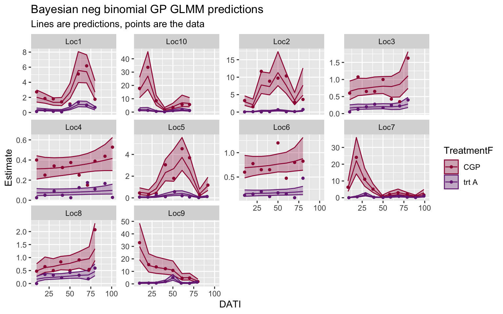
2.7 Summary of estimates
2.7.1 Compare TR estimates
Here, the trapping reduction estimates from all of the models are compared. As expected, the median TR estimates are very close from model to model, but the uncertainty in that estimate increase (i.e., the confidence/credible intervals get wider) when we properly account for the correlations in our data.
| Framework | Distribution | Model_name | TR | lowerCI | upperCI |
|---|---|---|---|---|---|
| Frequentist | Poisson | GLM | 88 | 88 | 89 |
| Frequentist | Neg Binomial | GLM | 88 | 86 | 90 |
| Bayesian | Neg Binomial | GLM | 88 | 86 | 90 |
| Frequentist | Poisson | GLMM (Location) | 85 | 77 | 90 |
| Frequentist | Neg Binomial | GLMM (Location) | 85 | 78 | 90 |
| Bayesian | Neg Binomial | GLMM (Location) | 85 | 76 | 90 |
| Frequentist | Poisson | GLMM (Location, nested Date) | 86 | 81 | 89 |
| Frequentist | Neg Binomial | GLMM (Location, nested Date) | 86 | 81 | 89 |
| Bayesian | Neg Binomial | GLMM (Location, nested Date) | 86 | 81 | 89 |
| Bayesian | Neg Binomial | GLMM (Location, Gaussian Process Date) | 83 | 72 | 89 |
2.7.2 Compare coefficients
Because TR is a non-linear function of \(\beta_1\), the differences int he model output get slightly distorted from the transformation. Thereofre, the \(\beta_1\) coefficients are displayed as well:
| Framework | Distribution | Model_name | Estimate | SE |
|---|---|---|---|---|
| Frequentist | Poisson | GLM | -2.17 | 0.027 |
| Frequentist | Neg Binomial | GLM | -2.16 | 0.099 |
| Bayesian | Neg Binomial | GLM | -2.16 | 0.100 |
| Frequentist | Poisson | GLMM (Location) | -1.89 | 0.205 |
| Frequentist | Neg Binomial | GLMM (Location) | -1.90 | 0.203 |
| Bayesian | Neg Binomial | GLMM (Location) | -1.88 | 0.229 |
| Frequentist | Poisson | GLMM (Location, nested Date) | -1.95 | 0.147 |
| Frequentist | Neg Binomial | GLMM (Location, nested Date) | -1.95 | 0.147 |
| Bayesian | Neg Binomial | GLMM (Location, nested Date) | -1.94 | 0.150 |
| Bayesian | Neg Binomial | GLMM (Location, Gaussian Process Date) | -1.77 | 0.242 |
2.7.3 Plot comparisons
2.7.3.1 GLM’s
In the side-by-side comparison, you can see the wider confidence intervals for the negative binomial distribution, compared to the Poisson.
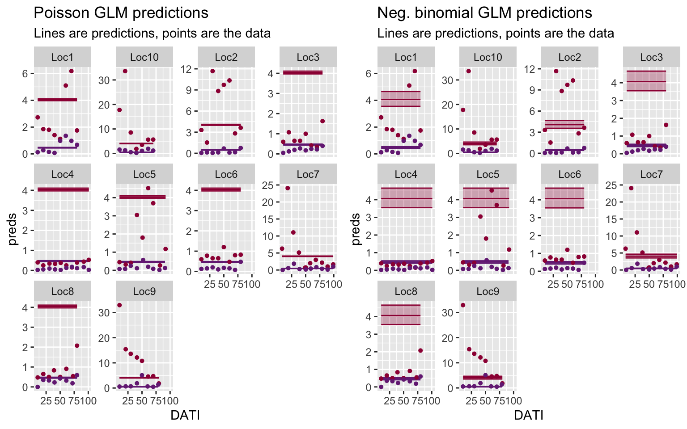
Side-by-side comparison of the frequentist vs Bayes negative binomial GLM predictions.
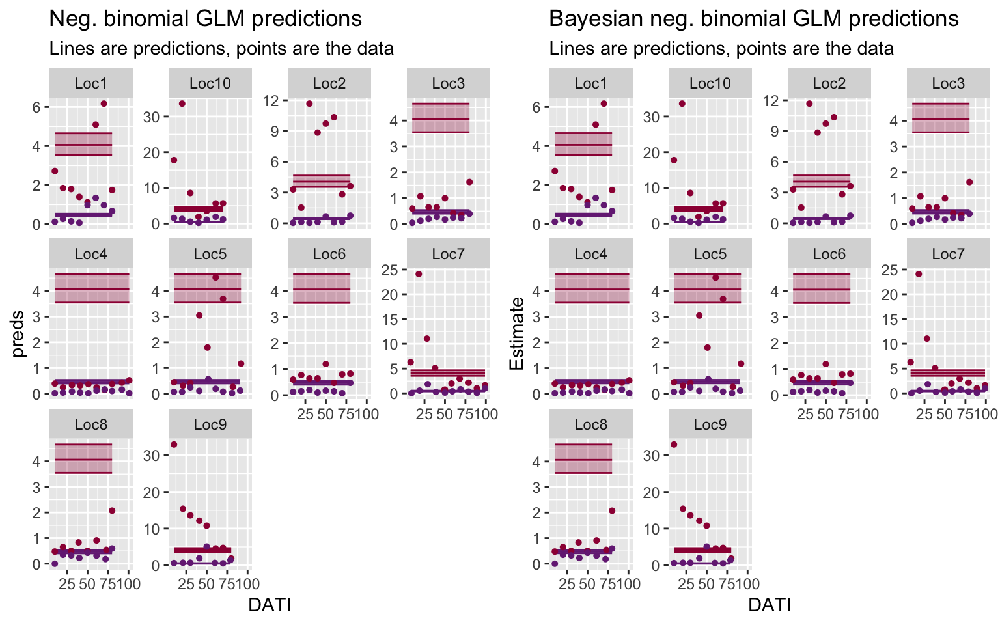
2.7.3.2 GLMM’s (Location RE)
Side-by-side comparison of the frequentist Poisson vs negative binomial GLMM (Location RE) predictions.
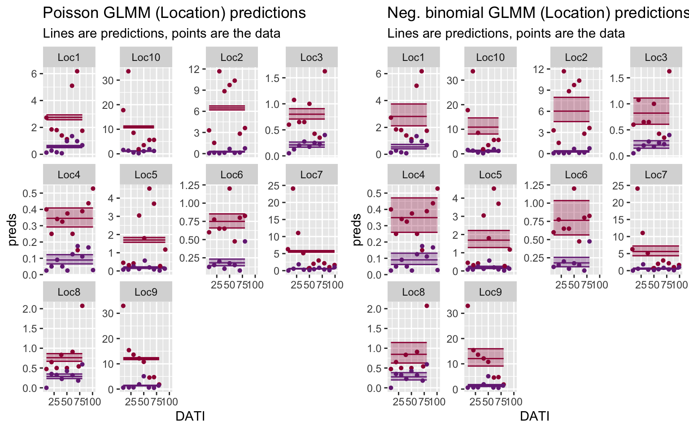
Side-by-side comparison of the frequentist vs Bayes negative binomial GLMM (Location RE) predictions.
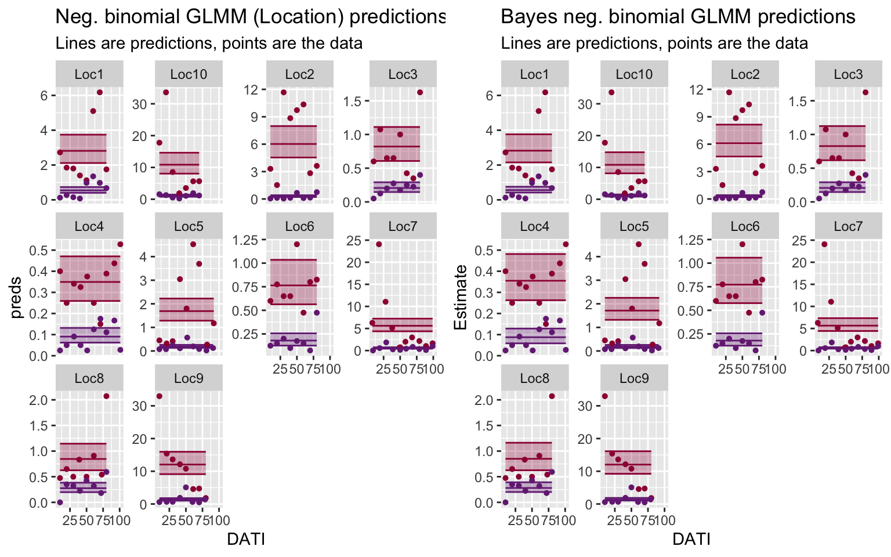
2.7.3.3 GLMM’s (Location RE, nested Date)
Note: These models are a great fit to the data that we have! But, they are overly confident and will not be good at predicting at new locations and new sampling dates.
Side-by-side comparison of the frequentist Poisson vs negative binomial GLMM (Location RE) predictions.
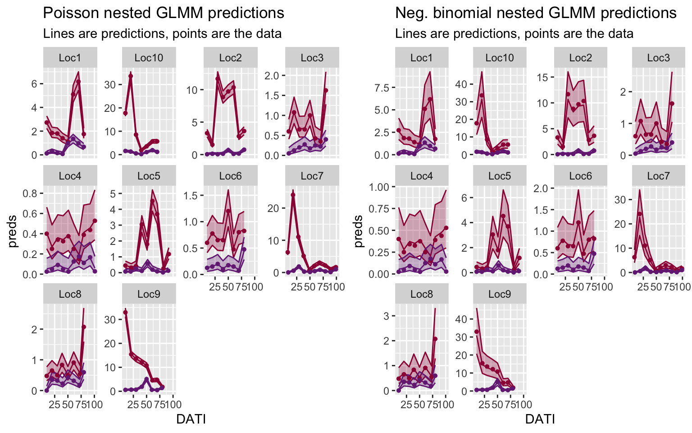
Side-by-side comparison of the frequentist vs Bayes negative binomial GLMM (Location RE) predictions.
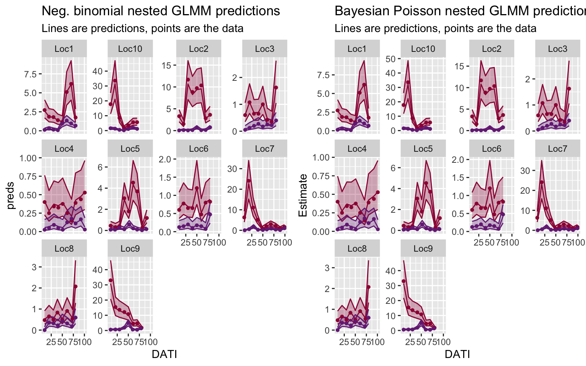